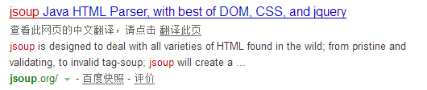

HTML知识回顾
HTML的构成
head 元素是所有头部元素的容器。
HTML
head
java <base href="http://www.w3school.com.cn/images/" /> ``
java java <link rel="stylesheet" type="text/css" href="mystyle.css" />meta
典型的情况是，meta 元素被用于规定页面的描述、关键词、文档的作者、最后修改时间以及其他元数据。
所有服务器都**至少**要发送一个：content-type:text/html。这将告诉浏览器准备接受一个 HTML 文档。
java <meta http-equiv="expires" content="31 Dec 2008">java <meta http-equiv="refresh" content="5" />java <meta http-equiv="refresh" content="5; url=http://www.itcast.cn/" />java <meta http-equiv="set-cookie" contect="Mon,12 May 2001 00:20:00 GMT(格林尼治标准时间)"> java <meta http-equiv="charset" content="iso-8859-1">scheme
一些搜索引擎会利用 meta 元素的 name 和 content 属性来索引您的页面。
* 标签用于定义客户端脚本，比如 JavaScript。
java <style type="text/css"> body {background-color:yellow} p {color:blue} </style>Document是什么
每个载入浏览器的 HTML 文档都会成为 Document 对象。
Document 对象使我们可以从脚本中对 HTML 页面中的所有元素进行访问。
Document 对象集合
Document 对象属性
jsoup 是一款Java 的HTML解析器，可直接解析某个URL地址、HTML文本内容。它提供了一套非常省力的API，可通过DOM，CSS以及类似于jQuery的操作方法来取出和操作数据。

jsoup elements对象支持类似于CSS(或jquery)的选择器语法，来实现非常强大和灵活的查找功能。.
这个select方法在Document,Element,或Elements对象中都可以使用。且是上下文相关的，因此可实现指定元素的过滤，或者链式选择访问。
Select方法将返回一个Elements集合，并提供一组方法来抽取和处理结果。
<dependency>
<!-- jsoup HTML parser library @ https://jsoup.org/ -->
<groupId>org.jsoup</groupId>
<artifactId>jsoup</artifactId>
<version>1.10.3</version>
</dependency>
package cn.itcast.sspc.base;
import java.nio.charset.Charset;
import org.apache.http.client.fluent.Request;
import org.jsoup.Jsoup;
import org.jsoup.nodes.Document;
import org.jsoup.nodes.Element;
import org.jsoup.select.Elements;
/**
* 使用Jsoup解析网页数据
*/
public class JsoupTest {
public static void main(String[] args) throws Exception {
// 1、准备数据
String html = Request.Get("http://www.itcast.cn").execute().returnContent().asString(Charset.forName("utf-8"));
// 2、使用Jsoup获取一个docment对象
Document doc = Jsoup.parse(html);
// 3、解析数据
// 3.1 获取的标题
String title = doc.title();
System.out.println(title);
// 3.2 获取所有的a标签
Elements els = doc.select("a");
// 3.4 获取所有的class
els = doc.select(".icon_fuli");
//3.5 获取有某个属性的所有标签
els = doc.select("[style]");
//3.5.1 匹配某个属性的前缀来查询
els = doc.select("[^s]");
//3.5.2 判断属性值等于xxx
els = doc.select("[href=/channel/flow.shtml]");
//4、组合选择器
els = doc.select("div.fast_path");
//5、找某个模块下的a标签
els = doc.select("div.fast_path a");
for(Element el : els){
System.out.println(el);
}
}
}